Peng Hao (彭浩), master’s student at the University of Tokyo, terahertz device physics.
Email: phaooo678 [at] gmail [dot] com
This page needs JavaScript for its full content and language switch.
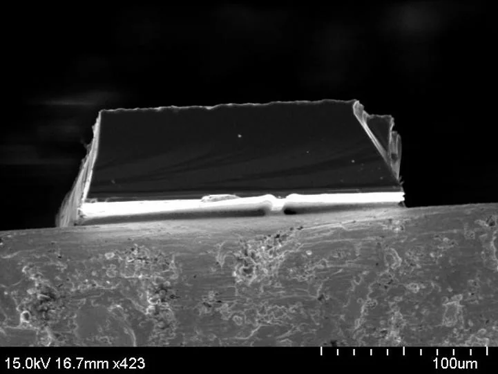
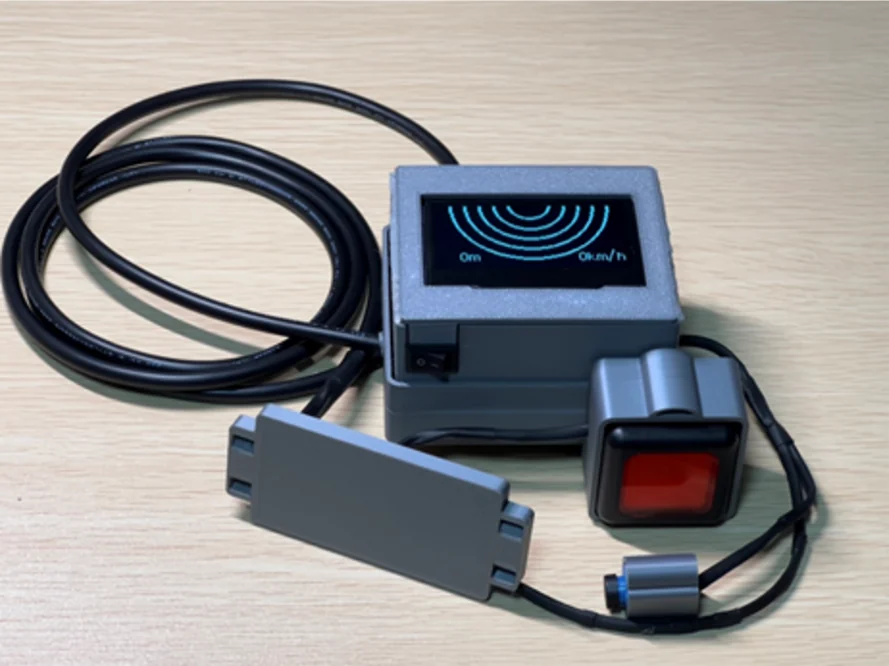
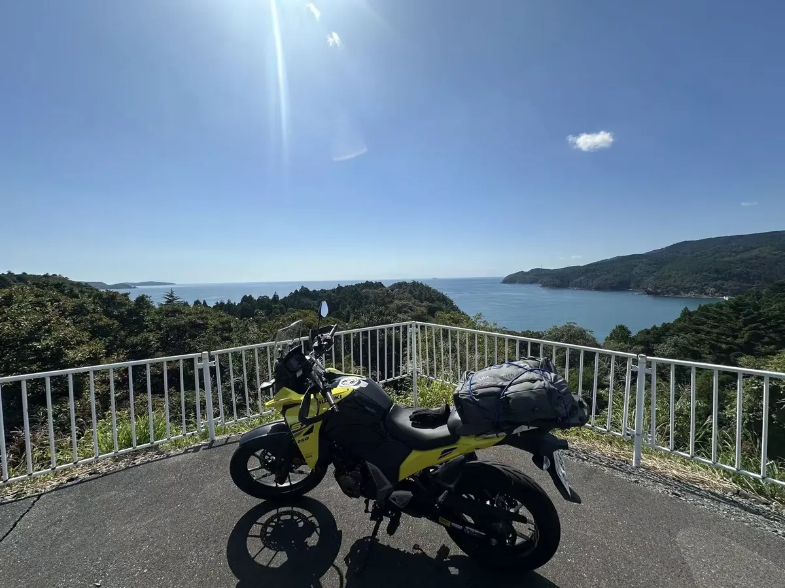
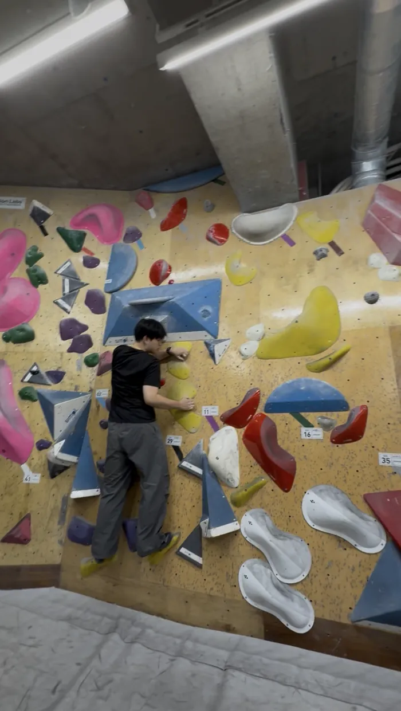
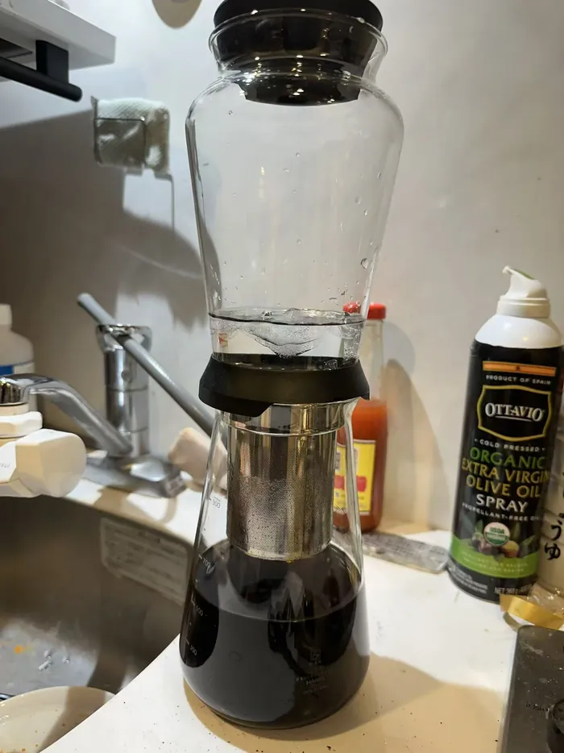
ωMP = √(ωp2 + ωc2)
ω2CR = 2ωc
ωMP ≈ 2ωc
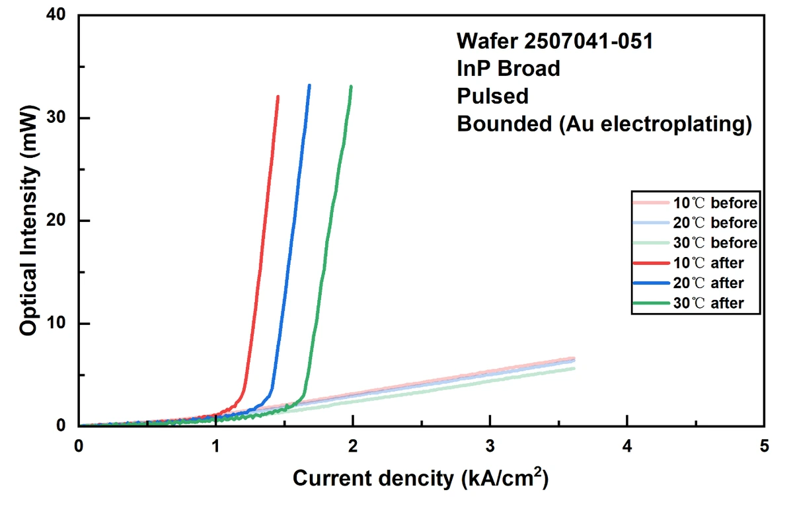
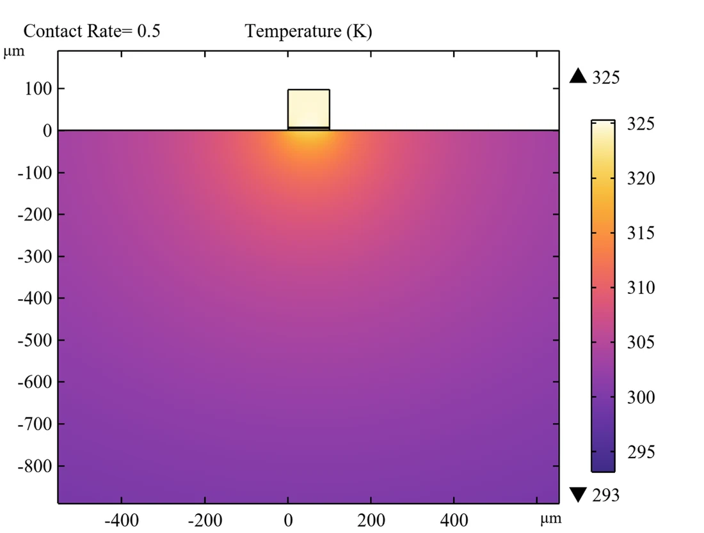
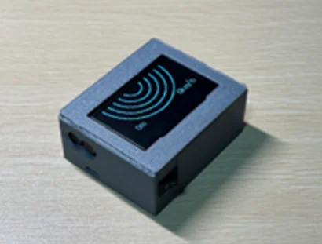
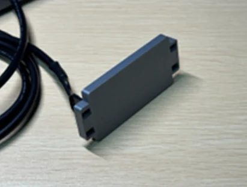
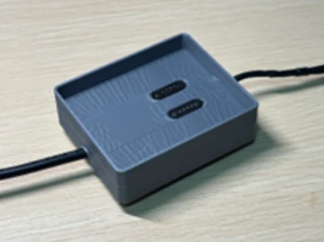
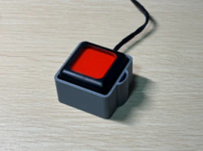